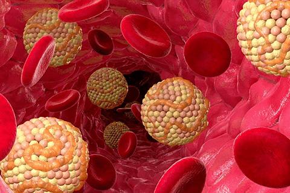
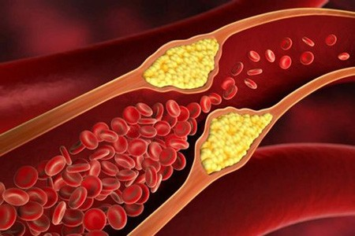
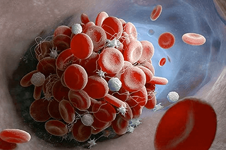
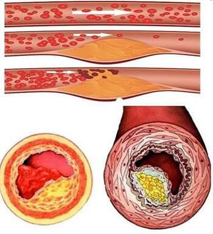
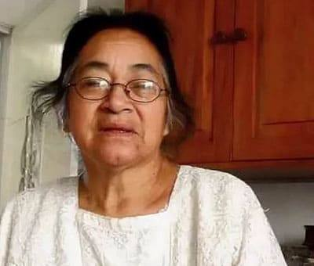
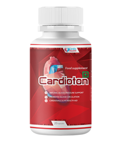

मुरुगेसन कल्याण इंडियाई हृदय रोग विशेषज्ञ, प्रोफेसर हैं। बिना गोलियों के लोगों का इलाज करने के लिए प्रसिद्ध। इसके अलावा, श्री मुरुगेसन के साथ इलाज कराने वाले सभी लोग ठीक हो जाएंगे। मरीज़ों में मिस्टर मुरुगेसन के पास इंडिया के मशहूर लोग भी हैं, साथ ही दूसरे देशों के मरीज़ भी हैं जो मदद माँगते हैं।
एन. रोगियों के इलाज के लिए अधिक समय देने की कोशिश करने के लिए मुरुगेसन कल्याण का साक्षात्कार शायद ही कभी किया जाता है। फिर भी, हमारे चैनल साक्षात्कारकर्ता भाग्यशाली थे - जाने-माने विशेषज्ञ उन रोगियों के लिए कुछ सवालों के जवाब देने के लिए सहमत हुए, जिनके पास क्लिनिक के लिए पंजीकरण करने का मौका नहीं था।
री। मुरुगेसन को पूरा भरोसा है कि हर कोई घर पर रक्त वाहिकाओं की सफाई कर सकता है और आपके स्वास्थ्य और स्थिति में सुधार कर सकता है। इस तरह की सफाई तनाव बढ़ने से राहत दिलाने में मदद करती है और सेवानिवृत्त लोगों की 9 पुरानी बीमारियों को ठीक करती है।
हीलिंग क्लींजिंग कैसे करें, कार्डियोलॉजिस्ट नीचे बताता है। इस लेख में इस तरह के विषयों को भी शामिल किया गया है
- गोलियों के बिना 120 साल तक जीना वास्तव में वास्तविक है!
- पुरानी असाध्य बीमारियां गंदे चैनलों के साथ क्यों चलती हैं?
- गंदी रक्त वाहिकाओं के लक्षण छिपे और स्पष्ट हैं
- गोलियों के बिना उम्र के उच्च रक्तचाप के उपचार के आधुनिक तरीके
ब्लड वेसल्स ब्लॉकेज है खतरनाक किलर!
मुरुगेसन विशेषज्ञ के साथ:
मैं कुछ डेटा प्रदान करूंगा जो मुझे आशा है कि आप गहराई से सोच सकते हैं!
ग्रह पर मृत्यु का सबसे आम कारण लीवर और रक्त वाहिका रोग है। उम्र में बीमारी का मुख्य कारण कोलेस्ट्रॉल है। यह पता चला है कि कोलेस्ट्रॉल ग्रह पर सबसे खतरनाक पदार्थ है। यह पदार्थ शराब की तुलना में अधिक बार लोगों को मारता है, दवा निकोटीन एक साथ।
94% मामलों में, यदि कोई व्यक्ति 80 वर्ष की आयु तक जीवित नहीं रहता है, तो कोलेस्ट्रॉल उसे मार देता है
कोलेस्ट्रॉल आपकी सेहत के लिए हानिकारक होता है। यदि यह पदार्थ रक्त वाहिकाओं में जमा नहीं होता है, तो व्यक्ति आसानी से 120 वर्ष की आयु तक जीवित रह सकता है

कोलेस्ट्रॉल कैसा दिखता है और यह क्या है? मैं यहां इस सामग्री का विवरण नहीं दूंगा क्योंकि यह पहले से ही एक चिकित्सा पाठ्यपुस्तक में लिखा गया है। मुझे संक्षिप्त होने दो। कल्पना कीजिए कि रात के खाने के बाद बिना धुले पैन में ठंडी चर्बी बची है। कोलेस्ट्रॉल ऐसा ही होता है।
रक्त में मौजूद यह पदार्थ रक्त वाहिकाओं की दीवारों में बस जाता है। सबसे पहले, छोटी पट्टिकाएं (20-25 वर्ष में), फिर कोलेस्ट्रॉल की परत तेजी से (25-40 वर्ष) बढ़ती है क्योंकि अधिक से अधिक कण चिपचिपी परत से चिपक जाते हैं। नतीजतन, 40 साल की उम्र तक, रक्त वाहिकाओं को कोलेस्ट्रॉल पट्टिकाओं से बंद कर दिया जाता है। जवाब में, हृदय के पास रक्तचाप बढ़ाने का कोई दूसरा विकल्प नहीं है। एक व्यक्ति अपनी सभी जटिलताओं के साथ उम्र से संबंधित तनाव वृद्धि और उच्च रक्तचाप का अनुभव करता है। लेकिन यह अभी तक सबसे खतरनाक नहीं है!
इससे भी अधिक खतरनाक तथ्य यह है कि कोलेस्ट्रॉल छोटे रक्त वाहिकाओं को रोकता है जो पूरे ऊतकों में प्रवेश करते हैं। रक्त की आपूर्ति की दर में गिरावट के परिणामस्वरूप, आंतरिक अंगों में रोग प्रक्रियाएं विकसित होती हैं। इन परिवर्तनों के साथ, एक व्यक्ति एक पुरानी बीमारी विकसित करता है।

पहले पेट में दर्द, फिर तिल्ली में दर्द और कुछ समय बाद लीवर और अग्न्याशय का स्टेनोसिस हो गया। आमतौर पर ऐसे मामलों में स्वास्थ्य विशेषज्ञों का कहना है कि व्यक्ति की तबीयत बिगड़ने लगती है। कोलेस्ट्रॉल वह है जो अक्सर इस प्रक्रिया को ट्रिगर करता है।
यह सब शरीर में रक्त वाहिकाओं की स्थिति पर निर्भर करता है। यदि पैरों में नलिकाएं अवरुद्ध हो जाती हैं, तो यह वैरिकाज़ नसों, लगातार एडिमा और पैरों में भारीपन की भावना का कारण बनता है। लीवर में हो तो हेपेटोसिस और सिरोसिस हो जाता है, अगर जोड़ों में हो तो गठिया और आर्थ्रोसिस या रीढ़ की हड्डी में दर्द होता है। अगर आंखों में रक्त वाहिकाएं बंद हो जाएं तो व्यक्ति धीरे-धीरे अंधा हो जाएगा
रक्त वाहिकाओं की रुकावट अपरिहार्य है! सभी की रक्त वाहिकाएं बंद हो जाएंगी। रक्त वाहिकाओं में गंदगी तेजी से उम्र बढ़ने का एक कारण है।
वह कोलेस्ट्रॉल शरीर में एक उम्र बढ़ने की श्रृंखला प्रतिक्रिया शुरू करता है। और रक्त वाहिका रुकावट वह चीज है जो किसी व्यक्ति के जीवन को स्वाभाविक रूप से निर्धारित अवधि से कम कर देती है।
120 वर्षों की अवधि में (यह वह संसाधन है जो हमारे अंगों के पास है), लोग अक्सर 70 वर्ष तक जीवित नहीं रहते हैं!विशेष रूप से 40-50 वर्ष की आयु में उम्र से संबंधित उच्च रक्तचाप वाले लोग। तो, यह रक्त वाहिका रुकावट के सबसे स्पष्ट लक्षणों में से एक है।
सिर्फ कोलेस्ट्रॉल ही नहीं - यह पदार्थ आपकी रक्त वाहिकाओं को भी दूषित करता है!
विशेषज्ञ श्री. मुरुगेसन कल्याण
कोलेस्ट्रॉल की समस्या इतनी भी बुरी नहीं है, दो और पदार्थ हैं जो खून में जमा हो जाते हैं!
जिसिम ट्रंबस

जब कोलेस्ट्रॉल वसा जैसा दिखता है, तो थ्रोम्बस (रक्त के थक्के का एक टुकड़ा) का द्रव्यमान पनीर जैसा दिखता है। रक्त वाहिकाओं की भीतरी दीवारों में थ्रोम्बस क्लस्टर बनते हैं। रक्त के थक्कों का खतरा कोलेस्ट्रॉल की तुलना में अधिक होता है। किसी भी समय, एक ट्रोम्बस एक रक्त वाहिका की दीवारों से निकल सकता है और हृदय में जा सकता है, जिससे संक्रमण, या मस्तिष्क तक पहुंच सकता है, जिससे स्ट्रोक हो सकता है। इन दोनों बीमारियों में मृत्यु की संभावना अधिक होती है और विकलांगता का स्तर बहुत अधिक होता है।
एक व्यक्ति जितना बड़ा होता है, रक्त के थक्कों का खतरा उतना ही अधिक होता है। यही कारण है कि वृद्ध लोग अक्सर स्ट्रोक या दिल के दौरे से बीमार हो जाते हैं।
कैल्शियम क्रिस्टल
ये भारी धातु के लवण, पारा और विभिन्न रसायन हैं जो जीवन भर बंद रहते हैं। उदाहरण के लिए, यदि कोई व्यक्ति खतरनाक उत्पादन वाली कंपनी में काम करता है, तो उसके पास इस तरह के और भी खतरनाक प्लाक हैं। वर्तमान पारिस्थितिकी के आधार पर भी प्रत्येक व्यक्ति में कैल्शियम का संचय पाया जा सकता है। यह पदार्थ, जैसा कि सिद्ध हो चुका है, कैंसर प्रशिक्षण का कारण है। यानी यह पदार्थ असामान्य कोशिका विभाजन का कारण बनता है, जिससे कैंसर होता है।
लगभग 98% कैंसर से होने वाली मौतों में रक्त में क्रिस्टल संचय का उच्च स्तर होता है। हम सभी जानते हैं कि पारा एक खतरनाक पदार्थ है। और प्रचुर मात्रा में कैल्शियम क्रिस्टल के जमा होने से रक्त स्वयं खतरनाक हो जाता है

50 साल की उम्र में, एक व्यक्ति की रक्त वाहिकाएं पूरे शरीर में बंद हो जाती हैं। जितनी अधिक रक्त वाहिकाएं बंद होती हैं, उतनी ही अधिक पुरानी बीमारियां होती हैं, जितनी तेजी से बुढ़ापा और भावना उतनी ही खराब होती है!
खुद जांच करें # अपने आप को को! आपकी रक्त वाहिकाएं कितनी गंदी हैं और क्या आपको अकाल मृत्यु का खतरा है!
विशेषज्ञ श्री. मुरुगेसन कल्याण:
मैं तुरंत आपके प्रश्न का उत्तर दे सकता हूं कि यदि आपने अपनी रक्त वाहिकाओं को कभी साफ नहीं किया है, और आपकी आयु 50 वर्ष से अधिक है, तो आपकी रक्त वाहिकाएं गंदी हैं। यदि आप अभी रक्त वाहिकाओं को साफ करते हैं, तो आप लगभग तुरंत बेहतर महसूस करेंगे।
बंद रक्त वाहिकाओं के लक्षण:
- सुबह सूजन
- टिनिटस
- आँखों के सामने उड़ जाता है
- जोड़ों का दर्द
- चक्कर आना
- रात में अनिद्रा और दिन में तंद्रा
- जल्दी थक जाओ
- दृश्य हानि
- स्मृति विकार
- वेना वैरिकाज़ नसों
- साँस की तकलीफे
- जठरांत्र संबंधी मार्ग के साथ अक्सर समस्याएं
- अधिक वजन की समस्या
क्या आप कह रहे हैं कि रक्त वाहिकाओं की सफाई बुजुर्गों के जीवन को बढ़ाने और रक्तचाप को स्थिर करने में मदद कर सकती है?
- मैं जानती हूँ। हमारे क्लिनिक में अब हम 50 वर्ष से अधिक (कभी-कभी 40 वर्ष से अधिक आयु) के सभी रोगियों को संवहनी सफाई की सलाह देते हैं। और सफाई के बाद, हम देखते हैं कि क्या परिवर्तन होता है और प्रक्रिया कैसे काम करती है। लगभग 10 में से 9 लोग, सफाई के तुरंत बाद दबाव समायोजित हो जाता है और इसके लिए उपचार की आवश्यकता नहीं होती है।
दूसरे शब्दों में, कई जो अब सक्रिय हैं और रक्तचाप को स्थिर करने के लिए दैनिक गोलियां ले रहे हैं, हो सकता है कि वे अब ऐसा न करें। बस जहाज को साफ करने की जरूरत है। यहां तक कि अगर उच्च रक्तचाप पूरी तरह से समाप्त नहीं हुआ है (और यह भी मामला है), तब भी आप बहुत बेहतर महसूस करेंगे!
दुर्भाग्य से, रक्तचाप को सामान्य करने का यह आसान तरीका अक्सर भ्रष्ट स्वास्थ्य विशेषज्ञों और दवा कंपनियों द्वारा छिपाया जाता है, जो रोगियों के लिए दीर्घकालिक और महंगे उपचार से लाभान्वित होते हैं। आखिरकार, एक व्यक्ति जितना अधिक समय तक बीमार रहेगा, वह दवा खरीदने के लिए उतना ही अधिक पैसा खर्च करेगा। मरीज उनके लिए फायदेमंद होते हैं। रक्त वाहिकाओं की सफाई आसान, सस्ती है और जल्दी से किसी व्यक्ति को अपने पैरों पर वापस लाने में मदद करती है।
एक इंडियाई सेवानिवृत्त व्यक्ति अपनी रक्त वाहिकाओं को साफ करके उच्च रक्तचाप से निपटता है। और पहले से ही ऐसे बहुत से लोग हैं....
मैं आपको निर्मला पथ्माराज का एक पत्र दिखाना चाहता हूं, मां इंडियाई सेवानिवृत्त लोगों में से एक हैं। स्थानीय क्लिनिक के एक स्वास्थ्य विशेषज्ञ ने पहले ही मौत का निदान दे दिया है। मां के रिश्तेदारों ने हार नहीं मानने का फैसला किया। बुढ़िया खुद हमारे पास नहीं आ पा रही थी, इसलिए उसकी बेटी ने मदद के लिए हमारे क्लिनिक से संपर्क किया। हम दूर से कैसे मदद कर सकते हैं? मैं फोन पर निदान नहीं कर सकता। हमने उसे पहले जहाज को साफ करने की सलाह दी।
3 महीने बाद बुढ़िया ने हमें व्यक्तिगत रूप से लिखा! मैं आपको उनका पत्र दिखाना चाहता हूं।

निर्मला पथमराजा, 67 साल की हैं। एक इंडियाई सेवानिवृत्त महिला जो उच्च रक्तचाप और कई अन्य बीमारियों से पीड़ित है। पुतातन शहर में रहते हैं।
मेरा जीवन वापस देने के लिए बहुत-बहुत धन्यवाद! जब मेरे बेटे ने तुम्हें फोन किया तो मैं पहले से ही बेहोश था, कुछ सोच नहीं पा रहा था। उच्च दबाव से सिर में कोहरा, जो बहुत सारी गोलियां लेने के बाद भी कम नहीं होता है। मैं रोधगलन से पहले की स्थिति में था, लेकिन स्वास्थ्य विशेषज्ञों ने मुझे अस्पताल में भर्ती भी नहीं किया, उन्होंने मेरे बेटे को कब्रिस्तान में जगह तैयार करने के लिए कहा। लेकिन मेरे बेटे ने आपको फोन करने का फैसला किया। और फिर उसने मुझे वह उत्पाद देना शुरू कर दिया जो आपने हमें भेजा था। सौभाग्य से, मेरी बीमारी दूर हो गई है। धीरे-धीरे दबाव कम हुआ। अब यह बिल्कुल नहीं बढ़ता। मैं वास्तव में बाद के जीवन से वापस आ गया हूं। एक हफ्ते पहले हमारे अस्पताल में मेरा परीक्षण किया गया था। जब मुझे बताया गया कि मैं अपनी उम्र के हिसाब से स्वस्थ हूं, तो मैं चौंक गया। कुछ महीने पहले, मैं लगभग कब्र में था। मैं वास्तव में आशा करता हूं कि मैं अभी भी जीवित रह सकता हूं। मुझे अपनी पूरी आत्मा के साथ रहना पसंद है। मेरी मदद और सुरक्षा के लिए बहुत-बहुत धन्यवाद ».
यह एक उदाहरण है कि रक्त वाहिकाओं की सफाई के बाद क्या हो सकता है। हालाँकि वास्तव में यहाँ कोई चमत्कार नहीं हैं - सब कुछ समझ में आता है।
सेवानिवृत्त और उच्च रक्तचाप के रोगियों के लिए रक्त वाहिकाओं की सफाई के तरीके
विशेषज्ञ श्री. मुरुगेसन कल्याण:
वर्तमान में, इंडिया में केवल एक ही उत्पाद है जो यह अच्छी तरह से कर सकता है। यह कार्डियोटोन है। यह उत्पाद 2015 में हार्ट एंड वैस्कुलर इंस्टीट्यूट में बनाया गया था। इस उत्पाद में लगभग 40 सक्रिय घटक होते हैं - पौधों के अर्क जो रक्त वाहिकाओं, विटामिन, सूक्ष्म और मैक्रो तत्वों के लिए उपयोगी होते हैं।
«कार्डियोटन» परिसर का सबसे महत्वपूर्ण घटक तथाकथित «सक्रिय ऑक्सीजन अणु» - ऐसे पदार्थ हैं जो रक्त वाहिकाओं में जमा होने वाली पट्टिका को "खाने" में सक्षम हैं। ये सक्रिय ऑक्सीजन अणु कोलेस्ट्रॉल, रक्त के थक्के और कैल्शियम क्रिस्टल को भंग करने में मदद करते हैं।
सक्रिय ऑक्सीजन अणु »2007 में जापानी वैज्ञानिकों द्वारा खोजे गए थे। इस क्षेत्र में शोध के लिए दो जापानी वैज्ञानिकों को नोबेल पुरस्कार मिला। आज, "सक्रिय ऑक्सीजन अणु" विश्व चिकित्सा में सक्रिय रूप से उपयोग किए जाते हैं।
वैसे, जापानियों ने स्वयं 1965 से 40-50 वर्ष की आयु के बाद रक्त वाहिकाओं की सफाई पर ध्यान देना शुरू किया, जब स्वास्थ्य सुधार और दीर्घायु के लिए राष्ट्रीय कार्यक्रम को अपनाया गया था। इस कानून में, जहाज की सफाई को एक अलग लेख के रूप में परिभाषित किया गया है। और आज हम ऐसे निर्णय के परिणाम देखते हैं। जीवन प्रत्याशा का रिकॉर्ड जापान के नाम है। जापानी लोगों के लिए 100 वर्ष की आयु तक जीना सामान्य है। यदि पहले जापानी जड़ी-बूटियों, व्यायाम और योग से रक्त वाहिकाओं को साफ करते थे, तो अब वे "सक्रिय ऑक्सीजन" पर आधारित विशेष पदार्थों का उपयोग करते हैं।
कार्डियोटोन को रक्त वाहिकाओं को साफ करने में कितना समय लगता है? औसतन, उत्पाद का सेवन 2-4 सप्ताह है। जब आप लेना समाप्त कर लें, तो आपको अपने स्वास्थ्य की स्थिति को देखने की आवश्यकता है। कार्डियोटोन सफाई के दौरान और कुछ महीनों बाद आपके शरीर और स्वास्थ्य के साथ यही कर सकता है। रक्त वाहिकाओं की स्थिति को साफ और सुधारता है
औसतन, उत्पाद का सेवन 2-4 सप्ताह है। जब आप लेना समाप्त कर लें, तो आपको अपने स्वास्थ्य की स्थिति को देखने की आवश्यकता है।
कार्डियोटोन सफाई के दौरान और कुछ महीनों बाद आपके शरीर और स्वास्थ्य के साथ यही कर सकता है।
रक्त वाहिकाओं की स्थिति को साफ और सुधारता है
"सक्रिय ऑक्सीजन अणुओं" के लिए धन्यवाद कार्डियोटोन कोलेस्ट्रॉल सजीले टुकड़े, रक्त के थक्कों और कैल्शियम संचय को भंग करने में मदद करेगा। इसके अलावा, जिन्कगो बिलोबा अर्क के लिए धन्यवाद, यह उत्पाद रक्त वाहिकाओं की स्थिति में सुधार करने और उनकी लोच को बहाल करने में मदद करता है। एक महीने की चिकित्सा के बाद, जैसा कि शोध के आंकड़ों से पता चलता है, रक्त वाहिकाएं साफ और अधिक लोचदार हो जाती हैं, जैसा कि 25-30 वर्ष की आयु के युवाओं में होता है। छोटी केशिकाओं को बहाल किया जाता है। नतीजतन, दबाव कूदना बंद हो जाता है, कमजोरी और उनींदापन गायब हो जाता है, और घाव भरने और घाव की स्थिति में सुधार होता है। साथ ही और भी ऊर्जा निकलती है। आपमें बहुत ऊर्जा होगी, आप घर के आसपास या देहात में कुछ करना चाहते हैं।
आंतरिक अंगों और जोड़ों को बहाल करने में मदद करता है
रक्त वाहिकाओं की सफाई के बाद आंतरिक अंगों की रिकवरी शुरू हो जाएगी। सौभाग्य से, प्रकृति ने कोशिका पुनर्जनन जैसे गुण निर्धारित किए हैं। नतीजतन, कई बीमारियां दूर हो जाएंगी। उदाहरण के लिए, यदि आपका अग्न्याशय या प्लीहा बीमार है, तो ये अंग दर्द करना बंद कर देंगे। अक्सर, रक्त वाहिकाओं की सफाई के बाद, पेट और ग्रहणी के अल्सर ठीक हो सकते हैं। इसके अलावा, जोड़ों को भी बहाल किया जा सकता है। गर्दन, पीठ और जोड़ों में ऐंठन और क्लिक गायब हो जाते हैं। कार्टिलेज पुनर्जीवित होता है। मौसम के बदलने पर अब घुटनों और उंगलियों में जोड़ों का दर्द नहीं होता है। संयुक्त गतिशीलता वापस आ जाएगी।
अतिरिक्त वसा पिघलाएं
अधिक वजन होना एक ऐसी चीज है जो उच्च रक्तचाप के मरीजों और बुजुर्गों की हालत 4-5 गुना तक खराब कर देती है। जितना अधिक वजन, रक्त वाहिकाओं, हृदय, जोड़ों पर भार उतना ही अधिक होता है। अक्सर वजन बढ़ने का कारण रक्त वाहिकाओं में रुकावट होती है क्योंकि ग्लूकोज को ऊतकों से सही मात्रा में नहीं निकाला जा सकता है। रक्त वाहिकाओं में जमी पट्टिका को साफ करने के बाद वजन अपने आप कम होने लगता है। इसके अलावा, कार्डियोटोन में मधुमक्खी के जहर का अर्क वसा को तोड़ने की प्रक्रिया को तेज कर सकता है। रक्त वाहिकाओं की सफाई के एक महीने बाद औसतन एक व्यक्ति 8-12 किलो वजन कम कर सकता है।
दृष्टि और स्मृति को पुनर्स्थापित करता है
कार्डियोटोन में युवा लार्च शंकु के अर्क होते हैं, जो फंडस के सूक्ष्म चैनलों को बहाल करने में सक्षम होते हैं, जिसके परिणामस्वरूप दृष्टि धीरे-धीरे वापस आती है। कई और लोगों को बस का नंबर दूर से दिखाई देने लगा और वे सूई में धागा फिर से डालने में सक्षम हो गए। आंख में रक्त वाहिकाओं की पूरी बहाली होती है। साफ रक्त वाहिकाओं वाले लोगों को अंधेपन का सामना बिल्कुल भी नहीं करना पड़ता है! यह सभी नेत्र रोग विशेषज्ञ जानते हैं।
पुरुषों में क्षमता को पुनर्स्थापित करता है!
रक्त वाहिकाओं को साफ करने के आश्चर्यजनक प्रभावों में से एक यह है कि पुरुषों में हार्मोन टेस्टोस्टेरोन फिर से बनना शुरू हो जाता है। नतीजतन, प्रोस्टेटाइटिस गायब हो जाता है और प्रोस्टेट एडेनोमा निलंबित हो जाता है। और संभावित रिटर्न भी। अगर आपकी उम्र 70 साल से कम है तो आप दोबारा सेक्स कर पाएंगे।
बुजुर्गों और उच्च रक्तचाप के रोगियों के लिए तितलियों के प्रभाव
कार्डियोटोन की क्रिया तितली के पंखों के फड़फड़ाने के समान होती है, जो आंतरिक अंगों को ठीक करने और स्वास्थ्य में सुधार करने के लिए एक श्रृंखला प्रतिक्रिया को ट्रिगर करती है। यह रक्त वाहिकाओं के सामान्यीकरण के साथ शुरू होता है और दृष्टि और जोड़ों की बहाली के साथ समाप्त होता है।
रक्त वाहिकाओं को साफ करने के 1-3 महीने बाद दूसरे जन्म की तरह होगा। इसके अलावा, रोगियों ने हर हफ्ते एक महत्वपूर्ण सुधार महसूस किया।
आराम से उठो
आप सुबह उठते हैं और आसानी से बिस्तर से उठ जाते हैं - आपको अपनी पीठ और गर्दन को चिल्लाते हुए अपने आप को उठने, घुटने टेकने और अपने कड़े पैरों को रगड़ने की जरूरत नहीं है। सुबह से ही आपका शरीर ऊर्जा और शक्ति से भर जाता है।
Kesihatan dan mood yang sangat baik
सुबह से और पूरे दिन। आप चैन की नींद सोएं, नींद का आनंद लें। आप ऊर्जावान महसूस करते हैं। आपको पूरी रात शौचालय जाने की जरूरत नहीं है। आपको दर्द या खुजली का अनुभव नहीं होता है।
स्वादिष्ट नाश्ता
आपका मेनू व्यापक होगा। अब आपको सख्त आहार का पालन करने की आवश्यकता नहीं है। यदि आप "कुछ अस्वस्थ" खाते हैं, तो आपको नाराज़गी का अनुभव नहीं होगा, आपके पक्ष में पंचर नहीं होगा।
बहुत ऊर्जावान
घर छोड़ने के बाद, आपको अपने पैरों के बारे में चिंता करने की ज़रूरत नहीं है - आप चलने को बोझ नहीं मानते हैं, आप कम से कम पूरे दिन चल सकते हैं, और आपके पैर थकते नहीं हैं और सूजन नहीं करते हैं। अब सांस की तकलीफ नहीं होगी, सिर घूमना बंद कर देगा। आप खुशी-खुशी काम कर पाएंगे।
अक्सर चुप
आप वास्तव में शांत और तनावमुक्त हैं। कोई निरंतर दर्द नहीं है जो आपके दिमाग को खा जाता है, आपको अन्य चीजों पर ध्यान केंद्रित करने से रोकता है। जब कुछ भी दर्द नहीं होता है, तो जीवन, ध्वनि, सुगंध नए रंगों से भर जाएगी जो लंबे समय से भुला दिए गए हैं।
दृष्टि वापसी
गंभीर दृष्टि भी धीरे-धीरे ठीक होने लगेगी। आपने जो देखा वह पहले स्पष्ट नहीं था स्पष्ट हो जाएगा। आप दूर से बस नंबर देख पाएंगे, प्रकृति की सुंदरता की प्रशंसा करने के लिए वापस आ सकेंगे।
और सबसे महत्वपूर्ण बात, अब आप बिना गोलियों के भी जी सकते हैं। ब्लड प्रेशर की दवा खरीदने के लिए फार्मेसी जाना भूल जाओ, यह एक बुरे सपने जैसा है। यह आपके लिए अतीत की बात होगी क्योंकि दबाव बढ़ना बंद हो जाएगा!
इंडियाई फार्मेसियों में कार्डियोटोन की कमी
जहां तक हम जानते हैं, फार्मेसियों में कार्डियोटोन खरीदना बहुत मुश्किल है। यह उत्पाद शायद ही कभी उपलब्ध होता है। ऐसा क्या? और आप इंडियाई लोगों को क्या सलाह देंगे?
- हा ये तो है। कार्डियोटोन का उत्पादन सीमित मात्रा में होता है, और इसलिए यह फार्मेसियों तक नहीं पहुंचता है। उत्पादों के अधिकांश स्टॉक, दुर्भाग्य से, विदेशों में भेज दिए जाते हैं, कुछ निजी क्लीनिकों द्वारा खरीदे जाते हैं।
औसत व्यक्ति के लिए कार्डियोटोन प्राप्त करना वास्तव में समस्याग्रस्त है। लेकिन अब शायद इस उत्पाद को हमारे क्लिनिक में ऑर्डर करें। ऐसा करने के लिए, आप इसे वेबसाइट पर प्राप्त करने के लिए एक अनुरोध छोड़ सकते हैं। हमने कार्यक्रम के लिए पहले से खरीदे गए स्टॉक के एक हिस्से को आवंटित करने का निर्णय लिया। ईमानदारी से, भाग छोटे हैं, इसलिए उत्पाद सभी के लिए पर्याप्त नहीं होगा। जो व्यक्ति सबसे पहले रिक्वेस्ट को छोड़ेगा वह इसे ऑर्डर कर सकेगा।
कार्डियोटोन प्राप्त करने की शर्तें:
- आपको इंडिया के क्षेत्र में होना चाहिए। हम कार्डियोटन को विदेशों में शिप नहीं करते हैं।
- कार्डियोटोन के अधिग्रहण की अनुमति केवल व्यक्तिगत उपयोग के लिए है। मैं वितरकों से आग्रह करता हूं कि वे उत्पाद को आम लोगों पर छोड़ दें! बुजुर्गों की पूर्ति करना अमानवीय बात है!
- आप नीचे दिए गए विशेष फॉर्म को भरकर इस वेबसाइट पर एक स्वीकृति छोड़ सकते हैं। इसमें आपको हमारे विशेषज्ञों-सलाहकारों से संपर्क करने के लिए अपना फोन नंबर छोड़ना होगा
हमारे कार्यक्रम का पालन करने के लिए, आपको छूट के साथ ड्रम के नीचे "स्पिन" बटन पर क्लिक करना होगा। आपको क्या मिलेगा इसके आधार पर आप कार्डियोटोन को विशेष छूट पर प्राप्त कर सकते हैं। आप केवल एक बार ड्रम का उपयोग कर सकते हैं।
किसी और के करने से पहले इस अवसर का लाभ उठाएं!
जैसा कि ऊपर उल्लेख किया गया है, दुर्भाग्य से, हमारे पास इंडिया में सभी उच्च रक्तचाप से ग्रस्त रोगियों और बुजुर्गों के लिए पर्याप्त मात्रा में यह उत्पाद नहीं है। इसलिए, हमने यह उत्पाद उन लोगों को प्रदान करने का निर्णय लिया है जो साइट पर अनुरोध दूसरों की तुलना में तेजी से छोड़ते हैं। यदि आप शरीर के स्वास्थ्य में सुधार करना चाहते हैं और रक्त वाहिकाओं की गहरी सफाई की मदद से रक्तचाप में वृद्धि से छुटकारा पाना चाहते हैं, तो उत्पाद को जितनी जल्दी हो सके ऑर्डर करें - जब तक वहाँ है
Perhatian! Cardioton dapat habis dengan cepat!
शेष वस्तुओं की संख्या तेजी से घट रही है!
अभी भी है
स्टॉक में:
23 आइटम
